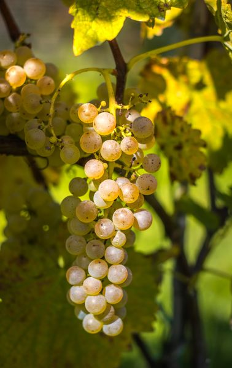
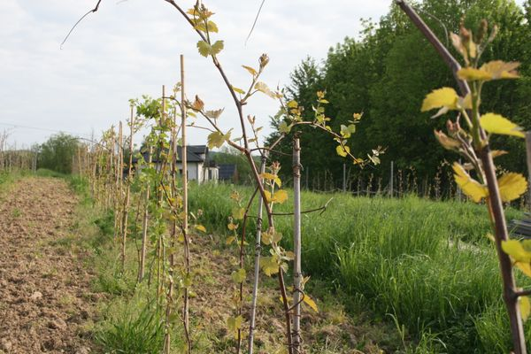

Biała odmiana
St. Pepin
Hybryda bardzo odporna na mróz, o delikatnym profilu kwiatowo-miodowym.
St. Pepin należy do odmian hybrydowych o wyjątkowej wytrzymałości na niskie temperatury. To cecha, która w polskim klimacie decyduje o tym, czy winorośl przetrwa zimę bez strat.
Wina z tej odmiany mają subtelny, kwiatowo-miodowy charakter i niską kwasowość, przez co dobrze odnajdują się w stylistyce półwytrawnej i półsłodkiej.
Jak uprawiamy St. Pepin w Kielnej Górze
Winnica Kielna Góra leży w Kielnarowej, około 10 km od centrum Rzeszowa, na stoku o południowym nachyleniu. Pierwsze krzewy zasadziliśmy w 2020 roku, a gospodarujemy na jednym hektarze. St. Pepin jest jedną z siedmiu odmian, które tu uprawiamy — wszystkie dobrane pod kątem odporności i naszego klimatu.
Charakterystyka odmiany St. Pepin
- wysoka mrozoodporność
- subtelne aromaty kwiatów i miodu
- niska kwasowość
Fotogaleria


Wina z tej odmiany
Napisz do nas po aktualną dostępność — formularz kontaktowy.